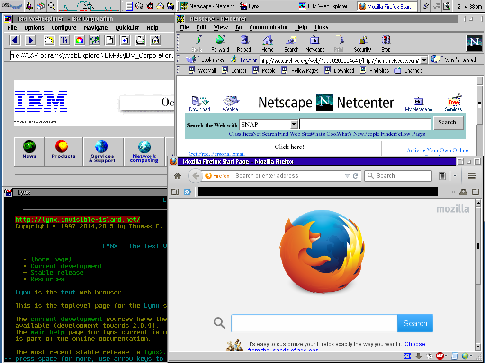

here is the four web browsers i have installed in os/2 running side by side on their default homepage
IBM WebExplorer (its a local saved copy of the ibm website from 1996, webexplorer has problems with most websites)
Netscape Navigator 4 (live internet archive version of it’s old home page)
Lynx 2.8.9
Firefox 38.8